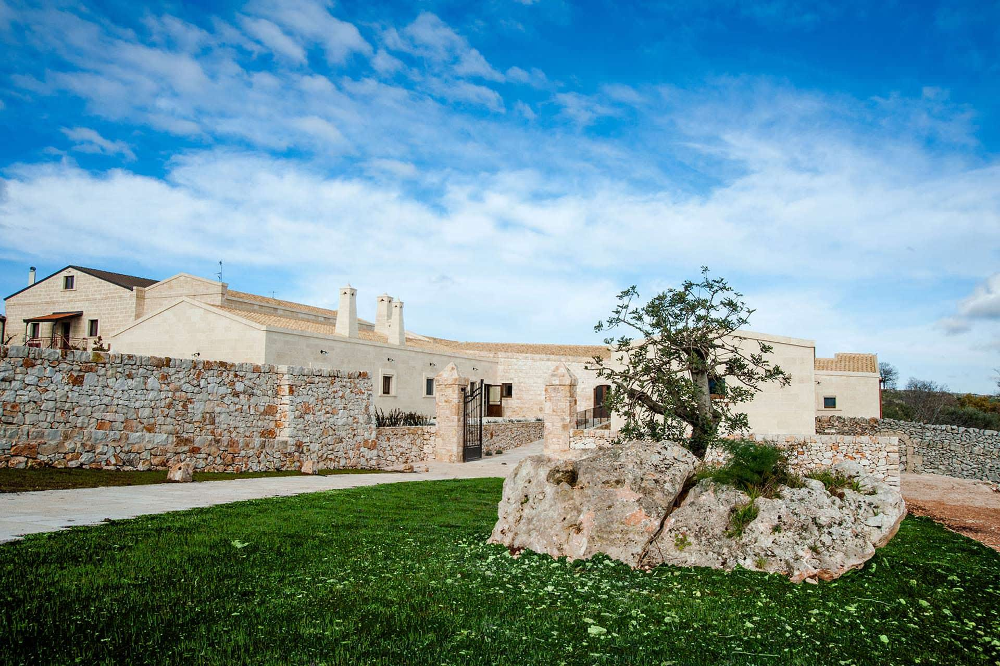
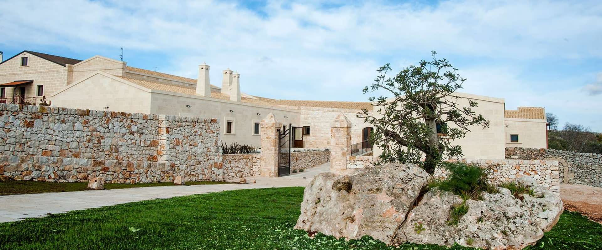
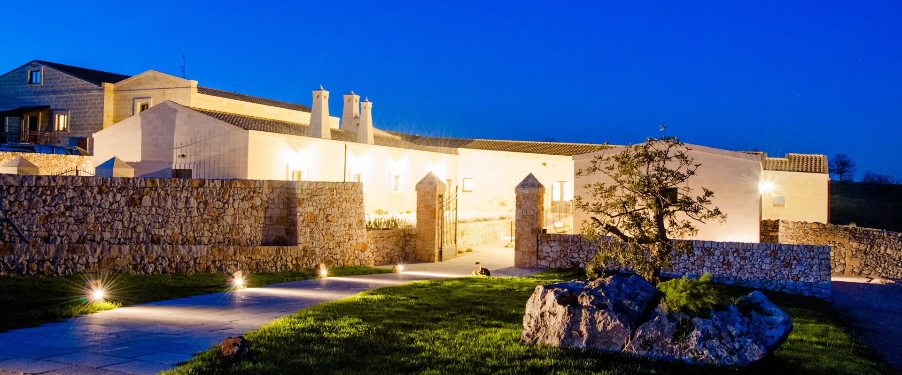
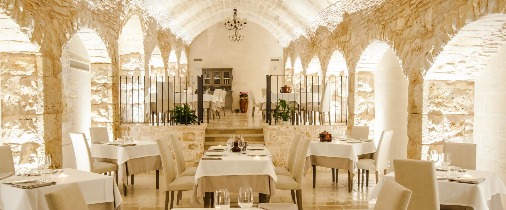
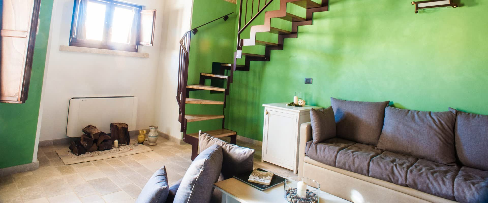
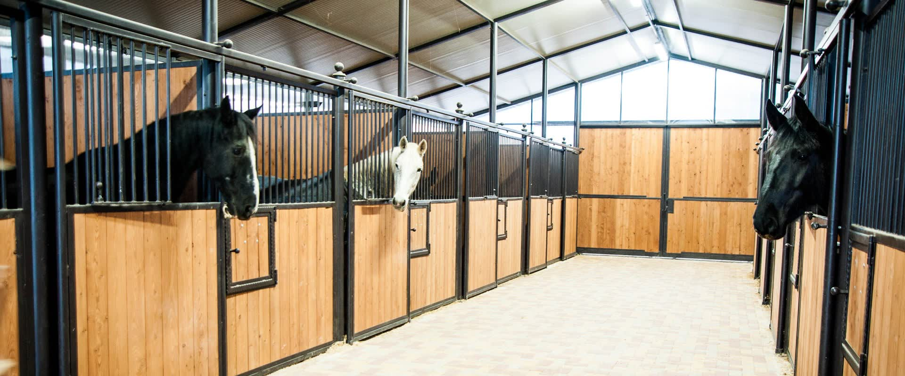

Agriturismo · B&B · Equitazione
Agriturismo Murà
Masseria San Domenico, contrada Sgolgore · Altamura (BA)
nel Parco Nazionale dell'Alta Murgia
Il posto
Il nome viene dai muri
«Trae il nome dai numerosi muretti a secco presenti nella zona.»
L'agriturismo Murà sta presso la Masseria San Domenico, a circa 8 km da Cassano delle Murge e a 11 da Altamura, in zona rurale dentro il Parco Nazionale dell'Alta Murgia, in contrada Sgolgore.
Nasce dalla ristrutturazione degli edifici preesistenti, convertiti in strutture ricettive. Intorno, il paesaggio murgiano: ondulazioni e avvallamenti dove a pascoli e seminativi si alternano macchie di vegetazione spontanea.
- La Foresta di Mercadante a circa 300 metri: si fa a piedi, in mountain bike e a cavallo.
- Tre cose in un posto solo: la tavola, sei camere, due scuderie.
- La sala del ristorante è una struttura ottocentesca, in passato una stalla.
Lo stesso posto, due volte
Trascina, e la sera arriva
Sono due fotografie scattate dallo stesso punto: lo stesso muretto, lo stesso cancello, la stessa roccia con l'albero. Cambia solo l'ora.


Si trascina col dito o col mouse. Da tastiera: metti a fuoco la maniglia e usa le frecce.
La tavola
Una stalla dell'Ottocento, ottanta ospiti
«Ricavato in seguito ad un accurato restauro, da una struttura ottocentesca in passato adibita a stalla, accoglie circa ottanta ospiti.»
Loro la descrivono così: «l'originalità e l'eleganza della sala sono il risultato dell'armonia tra architettura rustica e i motivi contemporanei dell'arredamento». Lo stesso vale per la cucina, «in cui la ricca tradizione locale e le eccellenti materie prime vengono esaltate grazie all'innovazione e alla fantasia dello Chef».


Le camere
Sei camere, e prima erano altro
«Murà dispone di sei camere ottenute da una vecchia stalla e da un locale impiegato in passato per la stagionatura dei formaggi.»
La ristrutturazione «ha mantenuto intatte le caratteristiche architettoniche originali»: nelle fotografie qui sotto si vedono le volte in pietra e gli archi.
- Sei camere, ricavate da una vecchia stalla e dal locale per la stagionatura dei formaggi.
- Al risveglio, «una ricca colazione tra dolci e marmellate di produzione Murà».
Le scuderie
Ventiquattro box, e il cavallo viene con te
Loro lo scrivono così: «Agli ospiti che condividono questa passione Murà offre la possibilità di accogliere i cavalli in due scuderie da dodici box ciascuna comprensive di selleria e box doccia».
- Due scuderie da dodici box ciascuna, con selleria e box doccia.
- Un maneggio coperto e un maneggio scoperto.
- Un tondino e «un'ampia area destinata a paddock».

Le fotografie
La tavola, le stanze, le scuderie
Sono le loro fotografie, così come stanno sul loro sito.
Intorno
Cosa c'è, a partire da qui
Sono i luoghi che indicano loro, nell'ordine in cui li elencano.
- La Foresta di Mercadante, a circa 300 metri: a piedi, in mountain bike, a cavallo.
- Ad Altamura, la Cattedrale Federiciana nel centro storico, fra stradine e claustri.
- In località Pontrelli, il sito delle impronte di dinosauri del Cretaceo superiore, «collocabili fra gli 83,5 e gli 85,8 milioni di anni fa».
- Nelle grotte di Lamalunga, l'Uomo di Altamura: uno scheletro di Homo neanderthalensis «perfettamente conservato».
- Il Pulo di Altamura, «una grande depressione di origine carsica caratterizzata da un ecosistema unico».
- I Sassi di Matera, patrimonio dell'umanità UNESCO dal 1993.
- La Gravina di Laterza, «il secondo canyon di origine carsica più profondo d'Europa».
- Castel del Monte, «un edificio del XIII secolo fatto costruire dall'imperatore Federico II».
- Le Grotte di Castellana, Alberobello e i trulli, la Valle d'Itria, Polignano a Mare, Bari e Trani.
Come si arriva
Quattro strade, e l'indicazione è sul posto
Sono le indicazioni che danno loro, riscritte senza cambiare una svolta.
Da Bari
Si raggiunge Cassano Murge, direzione Santeramo in Colle. Dopo circa 1 km a destra verso Altamura (S.P. 79 Cassano–Altamura); a circa 8 km svoltare a destra per Murà, come da indicazione sul posto.
Da Altamura
Vecchia via per Cassano Murge (S.P. 79 Cassano–Altamura). Dopo circa 11 km svoltare a sinistra per Murà, come da indicazione sul posto.
Da Santeramo
Direzione Altamura; a Casal Sabini svoltare a destra e proseguire per circa 5 km. All'incrocio con la S.P. 79 a destra, dopo 2 km a sinistra per Murà.
Da Matera
Si seguono le indicazioni da Altamura.
S.P. 79 Cassano–Altamura, km 10.700 · contrada Sgolgore · 70022 Altamura (BA)
GPS 40°50′48″ N, 16°41′25″ E
Contatti
Il modo più corto è il telefono
Scrivere
Dove
S.P. 79 Cassano–Altamura, km 10.700
contrada Sgolgore
70022 Altamura (BA)